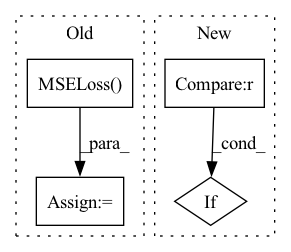

Pattern ID :29656
Before Change
input_scale=256,
)
self.loss = nn.MSELoss()
def forward(self, x):
if hparams.use_pe or hparams.arch=="ff":
x = self.pe(x)After Change
elif hparams.arch == "gabor":
self.mlp = GaborNet(input_scale=max(hparams.img_wh)/4)
elif hparams.arch == "bacon" :
self.mlp = MultiscaleBACON(
frequency=[hparams.img_wh[0]//4, hparams.img_wh[1]//4])
In pattern: SUPERPATTERN
Frequency: 3
Non-data size: 4
Instances Fragment ID: 87924985
Project Name: kwea123/coordinate-mlps
Commit Name: 51e3d243f753277651df4bca5669aca8823533aa
Time: 2022-05-25
Author: kwea123@gmail.com
File Name: train.py
M Class Name: CoordMLPSystem
N Class Name: CoordMLPSystem
M Method Name: __init__(2)
N Method Name: __init__(2)
M Parent Class: LightningModule
N Parent Class: LightningModule
M File Name: train.py
N File Name: train.py
M Start Line: 63
M End Line: 72
N Start Line: 63
N End Line: 68
Before Change
train_dataset = torch.utils.data.TensorDataset(x_seq, target_seq)
train_loader = torch.utils.data.DataLoader(train_dataset, batch_size=batch_size, shuffle=shuffle)
criterion = torch.nn.MSELoss() .to(device)
for batch_data in train_loader:
encoder_inputs, labels = batch_data
outputs = model(encoder_inputs, edge_index)After Change
for t in range(T):
x, edge_index = create_mock_data(node_count, edge_per_node, node_features)
x_seq[b,:,:,t] = x
if b == 0 :
edge_index_seq.append(edge_index)
target = create_mock_target(node_count, num_classes)
target_seq[b,:,t] = target Fragment ID: 87924987
Project Name: benedekrozemberczki/pytorch_geometric_temporal
Commit Name: 8efa512ff3ac06546a082de036a85428720abd7a
Time: 2021-03-20
Author: He_YX@outlook.com
File Name: test/convolutional_test.py
M Class Name: AnonimousClass
N Class Name: AnonimousClass
M Method Name: test_mstgcn(0)
N Method Name: test_mstgcn(0)
M Parent Class:
N Parent Class:
M File Name: test/convolutional_test.py
N File Name: test/convolutional_test.py
M Start Line: 291
M End Line: 328
N Start Line: 293
N End Line: 311
Before Change
train_dataset = torch.utils.data.TensorDataset(x_seq, target_seq)
train_loader = torch.utils.data.DataLoader(train_dataset, batch_size=batch_size, shuffle=shuffle)
criterion = torch.nn.MSELoss() .to(device)
for batch_data in train_loader:
encoder_inputs, labels = batch_data
outputs = model(encoder_inputs, edge_index)After Change
for t in range(T):
x, edge_index = create_mock_data(node_count, edge_per_node, node_features)
x_seq[b,:,:,t] = x
if b == 0 :
edge_index_seq.append(edge_index)
target = create_mock_target(node_count, num_classes)
target_seq[b,:,t] = target Fragment ID: 87924986
Project Name: benedekrozemberczki/pytorch_geometric_temporal
Commit Name: 8efa512ff3ac06546a082de036a85428720abd7a
Time: 2021-03-20
Author: He_YX@outlook.com
File Name: test/convolutional_test.py
M Class Name: AnonimousClass
N Class Name: AnonimousClass
M Method Name: test_astgcn(0)
N Method Name: test_astgcn(0)
M Parent Class:
N Parent Class:
M File Name: test/convolutional_test.py
N File Name: test/convolutional_test.py
M Start Line: 248
M End Line: 285
N Start Line: 236
N End Line: 266